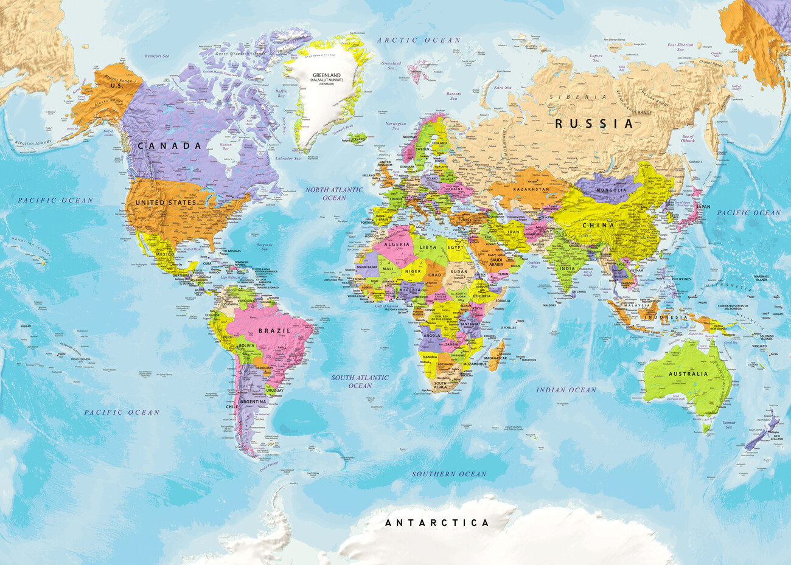
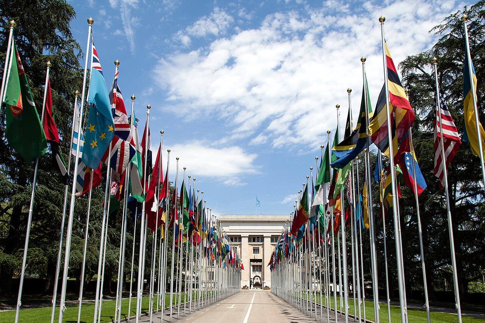
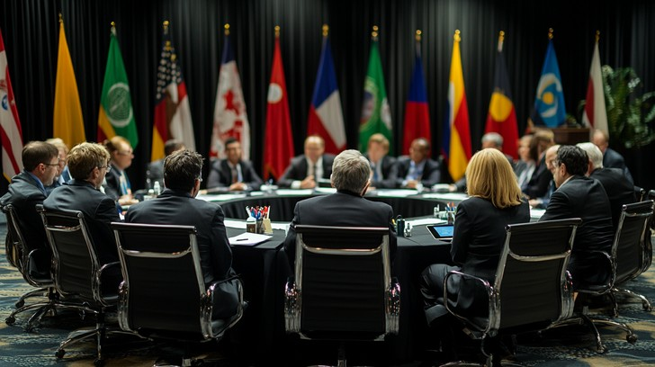
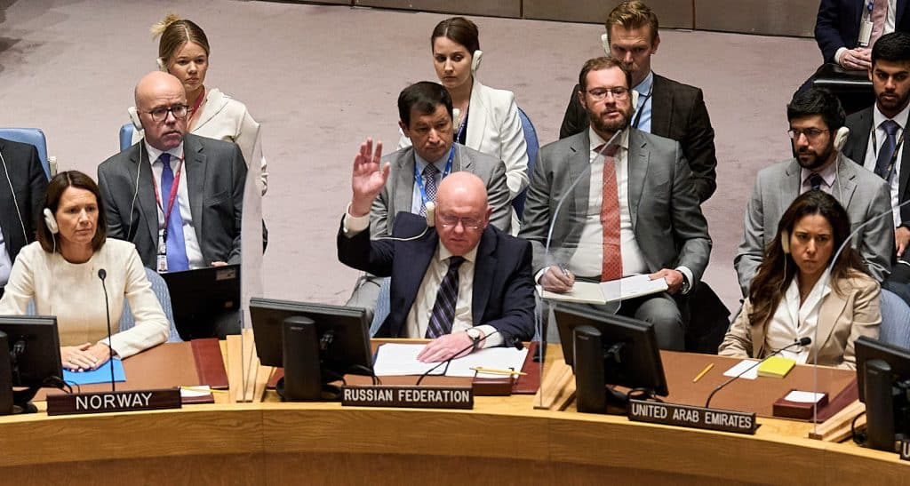
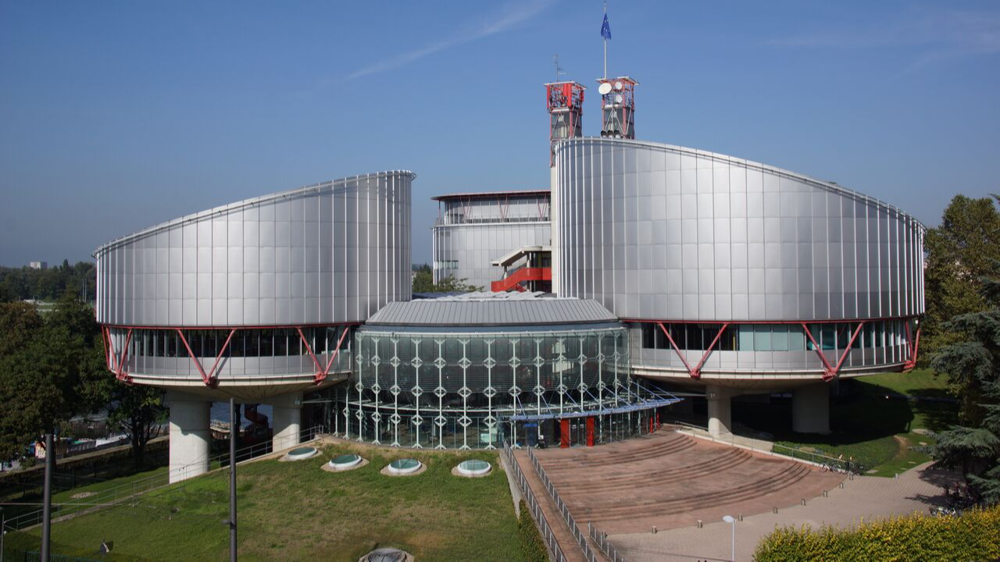

01 Geopolitika na mapi
02 Ujedinjene nacije

03 Zastave svijeta

04 Diplomatija

05 Glas koji odlučuje
06 Riječi i uticaj
07 Umijeće kompromisa
08 Zajednički ciljevi
09 Veze među državama

10 Evropski sud za ljudska prava